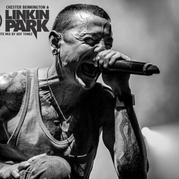
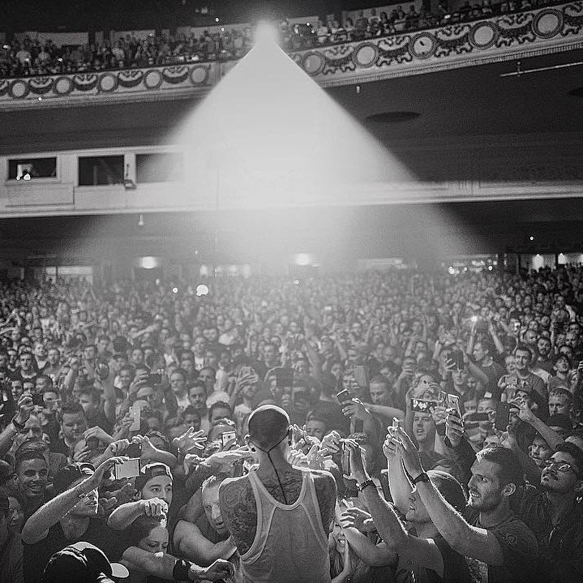
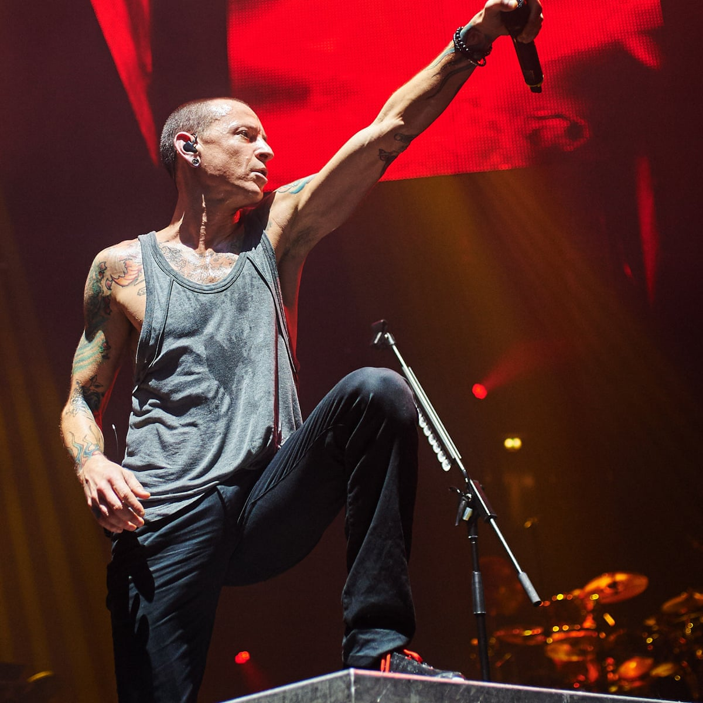
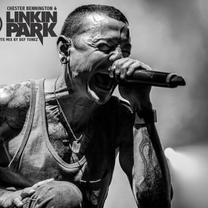
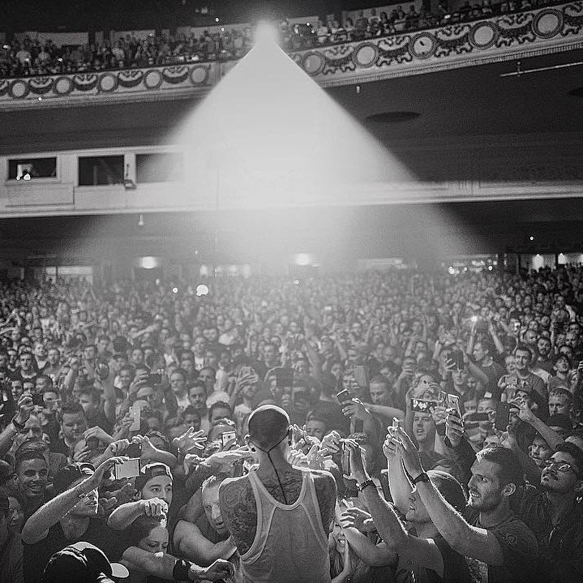
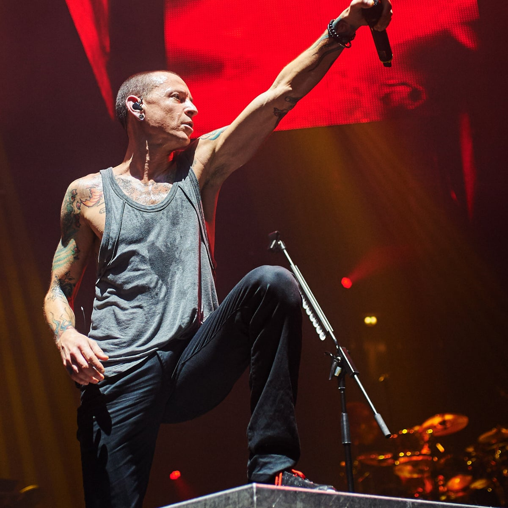

Chester Bennington
 





He served as the lead vocalist of the bands Linkin Park...
When this began
I had nothing to say
And I get lost in the nothingness inside of me
(I was confused)
And I let it all out to find
That I'm not the only person with these things in mind
But all that they can see the words revealed
Is the only real thing that I've got left to fee
(Nothing to lose)
Just stuck, hollow and alone
And the fault is my own, and the fault is my own
I wanna heal, I wanna feel what I thought was never real
I wanna let go of the pain I've felt so long
(Erase all the pain 'til it's gone)
I wanna heal, I wanna feel like I'm close to something real
I wanna find something I've wanted all along
Somewhere I belong
And I've got nothing to say
I can't believe I didn't fall right down on my face
(I was confused)
Looking everywhere only to find
That it's not the way I had imagined it all in my mind
What do I have but negativity
'Cause I can't justify the way, everyone is looking at me
(Nothing to lose)
Nothing to gain, hollow and alone
And the fault is my own, and the fault is my own
I wanna heal, I wanna feel what I thought was never real
I wanna let go of the pain I've felt so long
(Erase all the pain 'til it's gone)
I wanna heal, I wanna feel like I'm close to something real
I wanna find something I've wanted all along
Somewhere I belong
I will never know myself until I do this on my own
And I will never feel anything else, until my wounds are healed
I will never be anything 'til I break away from me
I will break away, I'll find myself today
I wanna heal, I wanna feel what I thought was never real
I wanna let go of the pain I've felt so long
(Erase all the pain 'til it's gone)
I wanna heal, I wanna feel like I'm close to something real
I wanna find something I've wanted all alongv
Somewhere I belong
(I wanna heal, I wanna feel like I'm)
Somewhere I belong
(I wanna heal, I wanna feel like I'm)
Somewhere I belong
Somewhere I belong